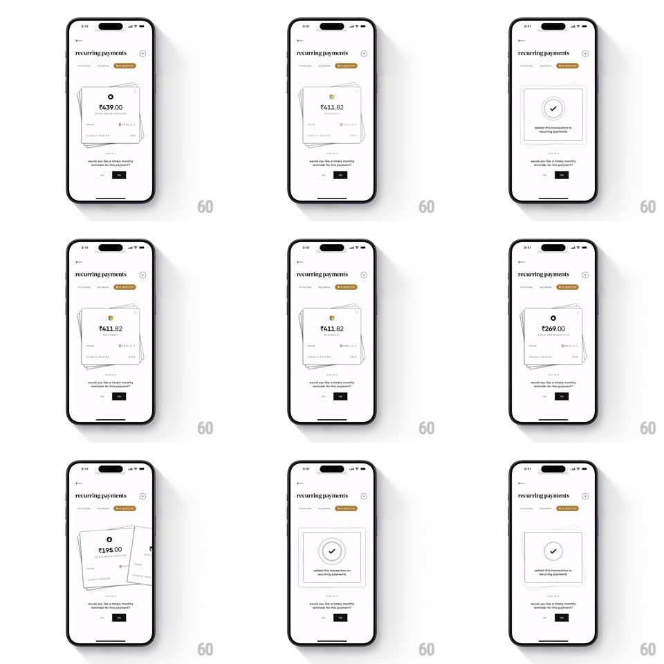

Media
Frame-by-frame

Rebuild this interaction 1:1: CRED's recurring payments review - a fanned stack of payment cards (Rs 439.00, Rs 411.82, Rs 269.00) that you swipe through with springy dismissals, each dismissal drawing a circular checkmark success state.

Rebuild this interaction 1:1: CRED's recurring payments review - a fanned stack of payment cards (Rs 439.00, Rs 411.82, Rs 269.00) that you swipe through with springy dismissals, each dismissal drawing a circular checkmark success state. ## Integration Integration: stack-agnostic spec - springs given as stiffness/damping, timed motions as duration + curve; map every value to your framework and animation library of choice. ## Scene Minimal white "recurring payments" screen: a stack of slightly rotated receipt-style cards showing an amount and merchant, the question "would you like a timely monthly reminder for this payment?" and Yes / No buttons. Success state: a bordered box with a circular checkmark and "added this transaction to recurring payments". ## Motion spec Pattern: card-stack swipe with drawn success check, ~700ms per cycle. - Stack: three cards fanned with +-6deg rotations and 8px offsets; the top card is straight. - Swipe or tap: the top card flies off in the swipe direction (500ms, ease-in) with rotation following the fling (up to 20deg) while the stack beneath advances - each card rotates/translates to the next slot (spring ~340/24, 350ms). - Success: a circle draws itself (stroke, 400ms, ease-out) followed by the check stroke (200ms), then the confirmation text fades up 8px (250ms). - The next card fades in under the success box (300ms) as the check holds. ## Calibration - Off-screen flight direction follows the drag vector; Yes/No taps throw right/left respectively. - Only one check draws per card; it holds until the next card is fully in place. ## Reduced motion Cards crossfade out; the checkmark appears without the draw. ## Don't miss - The checkmark is stroke-drawn in two phases - circle, then tick - not a pop-in icon. - The fan rotation makes the stack readable even before any interaction.